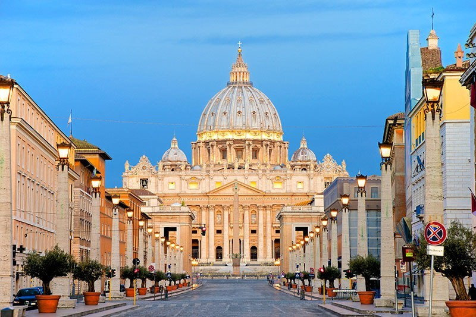
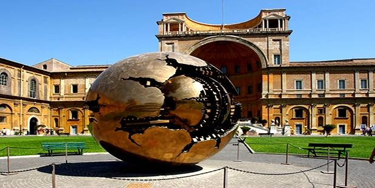

מְדִינַת קִרְיַית הוַותִיקָן (בלטינית: Status Civitatis Vaticanæ, בעברית תקנית: וטיקן[7]), בקיצור הוותיקן, היא המדינה העצמאית הקטנה בעולם מבחינת שטחה - פחות ממחצית קמ"ר בתוך העיר רומא שבאיטליה, וכן מבחינת האוכלוסייה - כ-1000 נפש.[8] קריית הוותיקן היא הביטוי הטריטוריאלי לעצמאותו וריבונותו של הכס הקדוש (הממשלה האוניברסלית של הכנסייה הקתולית) והאפיפיור. קריית הוותיקן משמשת כמרכז הנצרות הקתולית בעולם, ובהתאם רוב התושבים הם אנשי דת קתולים

|  |  |